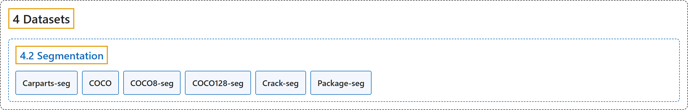

4.2 Segmentation
Classification

Glossary
| Term | Definition | 中文翻译 | Source |
|---|---|---|---|
| 4.2 Segmentation 实例分割数据集 |
(context) "Instance segmentation is a computer vision task that involves identifying and delineating individual objects within an image." | （语境）实例分割是一项识别并勾勒图像中各个物体的计算机视觉任务。 | Ultralytics, n.d.-f, "Instance Segmentation Datasets Overview", para. 1 |
| Carparts-seg 汽车部件分割 |
"The Ultralytics Carparts Segmentation Dataset provides 3,833 annotated images across 23 car-part classes — including bumpers, doors, lights, mirrors, hood, and trunk — for training instance segmentation models on automotive computer vision tasks." | Ultralytics 汽车部件分割数据集提供 3,833 张标注图像，涵盖 23 个汽车部件类别，包括保险杠、车门、车灯、后视镜、引擎盖和后备箱，用于在汽车计算机视觉任务上训练实例分割模型。 | Ultralytics, n.d.-a, "Carparts Segmentation Dataset", para. 1 |
| COCO COCO 分割版 |
"The COCO-Seg dataset provides COCO (Common Objects in Context) instance segmentation masks — 118,287 training and 5,000 validation images with polygon masks across 80 object categories — in the Ultralytics YOLO label format." | COCO-Seg 数据集以 Ultralytics YOLO 标注格式提供 COCO 的实例分割掩码：118,287 张训练图像和 5,000 张验证图像，带多边形掩码，涵盖 80 个物体类别。 | Ultralytics, n.d.-b, "COCO-Seg Dataset", para. 1 |
| COCO8-seg COCO8 分割版 |
"Ultralytics COCO8-Seg is a small but versatile instance segmentation dataset composed of the first 8 images of the COCO train 2017 set, 4 for training and 4 for validation." | Ultralytics COCO8-Seg 是一个小而多用途的实例分割数据集，由 COCO train 2017 集的前 8 张图像组成，4 张训练，4 张验证。 | Ultralytics, n.d.-d, "COCO8-Seg Dataset", para. 1 |
| COCO128-seg COCO128 分割版 |
"Ultralytics COCO128-Seg is a small but versatile instance segmentation dataset composed of the first 128 images of the COCO train 2017 set." | Ultralytics COCO128-Seg 是一个小而多用途的实例分割数据集，由 COCO train 2017 集的前 128 张图像组成。 | Ultralytics, n.d.-c, "COCO128-Seg Dataset", para. 1 |
| Crack-seg 裂缝分割 |
"The Ultralytics Crack Segmentation Dataset provides 4,029 annotated images of cracks on roads and walls for training instance segmentation models on a single crack class." | Ultralytics 裂缝分割数据集提供 4,029 张道路和墙面裂缝的标注图像，用于在单一 crack（裂缝）类别上训练实例分割模型。 | Ultralytics, n.d.-e, "Crack Segmentation Dataset", para. 1 |
| Package-seg 包裹分割 |
"The Ultralytics Package Segmentation Dataset is a curated collection of 2,197 annotated images of packages for training instance segmentation models on a single package class." | Ultralytics 包裹分割数据集是一套精选的 2,197 张包裹标注图像，用于在单一 package（包裹）类别上训练实例分割模型。 | Ultralytics, n.d.-g, "Package Segmentation Dataset", para. 1 |
References
Ultralytics. (n.d.-a). Carparts Segmentation Dataset. Ultralytics YOLO Docs (ultralytics 8.4.194). Retrieved October 31, 2026, from https://docs.ultralytics.com/datasets/segment/carparts-seg/
Ultralytics. (n.d.-b). COCO-Seg Dataset. Ultralytics YOLO Docs (ultralytics 8.4.194). Retrieved October 31, 2026, from https://docs.ultralytics.com/datasets/segment/coco/
Ultralytics. (n.d.-c). COCO128-Seg Dataset. Ultralytics YOLO Docs (ultralytics 8.4.194). Retrieved October 31, 2026, from https://docs.ultralytics.com/datasets/segment/coco128-seg/
Ultralytics. (n.d.-d). COCO8-Seg Dataset. Ultralytics YOLO Docs (ultralytics 8.4.194). Retrieved October 31, 2026, from https://docs.ultralytics.com/datasets/segment/coco8-seg/
Ultralytics. (n.d.-e). Crack Segmentation Dataset. Ultralytics YOLO Docs (ultralytics 8.4.194). Retrieved October 31, 2026, from https://docs.ultralytics.com/datasets/segment/crack-seg/
Ultralytics. (n.d.-f). Instance Segmentation Datasets Overview. Ultralytics YOLO Docs (ultralytics 8.4.194). Retrieved October 31, 2026, from https://docs.ultralytics.com/datasets/segment/
Ultralytics. (n.d.-g). Package Segmentation Dataset. Ultralytics YOLO Docs (ultralytics 8.4.194). Retrieved October 31, 2026, from https://docs.ultralytics.com/datasets/segment/package-seg/